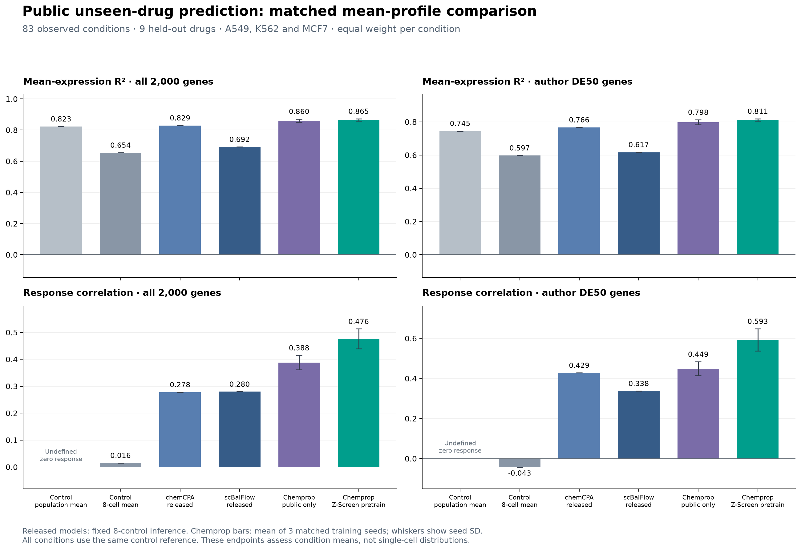
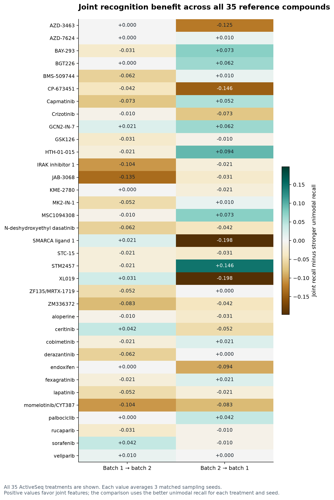

Z-Screen pairs combinatorial small molecules built from reusable building blocks with whole-transcriptome RNA and high-content imaging readouts in microfluidic nanowells. This portal presents the Z-Screen pilot dataset (162,914 compounds, 190,699 profiles, 11,435 same-well ActiveSeq wells) and what it shows: the measurements are learnable, they transfer to public data, and they match chemical and genetic reference responses.
A conventional screen tests a pile of unrelated molecules for a single yes/no signal. Z-Screen builds molecules like sentences from recurring chemical words, then reads out 6,000 genes per nanowell, with imaging paired on 33,575 compounds and measured inside the same well on 11,435 ActiveSeq wells.
In the pilot dataset, 162,914 molecules are assembled from 627 reusable building blocks in up to five positions. Each block appears in hundreds of molecules (median 461), and the dataset contains 5.08 million pairs of molecules that differ by a single piece.
Across 4 libraries (ZEL024, ZEL028, ZEL031, ZEL039) and 5 cell backgrounds (8 contexts), 46,944 raw genes are depth-normalized onto a 6,000-gene surface and projected onto a pinned k = 32 semi-NMF basis (W ∈ ℝ32×6000).

Two internally generated benchmarking workstreams tested unseen recipes, unseen building blocks, active-learning screening compression, and transfer to public datasets (SciPlex3, NeurIPS 2023 primary human PBMCs, and TDC ADMET).
Z-Screen’s phenomimicry engine matches pilot-dataset profiles against 13,046 clinical and preclinical drugs (LINCS L1000, Tahoe-100M, CIGS) and 43 CRISPR Perturb-seq signature sets (~18,800 genes, ~8 million single cells), with calibration on reference controls at every step.
When a molecule enters a cell it changes thousands of genes, producing a high-dimensional barcode. We compare that barcode against two reference libraries:
The two discovery tracks share chemistry: the BET-associated core BB_3717371053 appears in both. The chemical track has 110 qualifying reference matches across 51 series; the genetic track has 2,626 matches across 178 clusters. All ten genetic programs have at least three multi-well active analogs; chemical series ZS-SAR-01, -03 and -06 have none and ZS-SAR-07 has one, so those are rescreen-first. These are starting points for focused experiments, not validated leads.
| Program | Track · evidence | Context · core block | Target / mechanism axis | Orthogonal chemical and genetic support | Statistics and cliff | Proposed confirmation assay |
|---|---|---|---|---|---|---|
| ZS-SAR-01 | Chemical twindual orthogonal | A549 · ZEL028BB_2172915349 (+BB_3460866978), N = 132 | CDK4/6/7/9 transcriptional and cell-cycle kinase | CIGS Roniciclib · internal Palbociclib (Z +5.14) · CDK9 KO (Z +5.27) | Zemp 7.15 (q 1.6e−8) · 15 active / 47 cliffs · 0 multi-well | CDK9/cyclin T1 LanthaScreen + p-RNAPII Ser2 |
| ZS-SAR-02 | Chemical twindual orthogonal | A549 · ZEL031BB_3103020399, N = 83, 13 mw | ESR1 / AR nuclear hormone receptor | CIGS Endoxifen · internal Endoxifen (Z +6.40) · AR KO (Z +6.43, 100%) | Zemp 5.75 (q 1.1e−8) · 14 active / 15 cliffs | ERα/AR PolarScreen competitor + TFF1/FKBP5 qPCR |
| ZS-SAR-03 | Chemical twindual orthogonal | H1650 · ZEL028BB_3467217614, N = 213 | ALK / MET / IGF1R receptor tyrosine kinase | CIGS Ceritinib · internal AZD-3463 (Z +6.26) · ALK KO (Z +3.56) | Zemp 5.97 (q 8.4e−6) · coherence 0.731 · 0 multi-well | ALK/IGF1R ADP-Glo kinase + p-ALK/p-AKT HTRF |
| ZS-SAR-04 | BET-associated responsepathway-level support | THP1 · ZEL031BB_3717371053, N = 87, 3 mw | BRD4 / BRD2 BET bromodomain | CIGS AZD5153 · internal MZ1 (Z +4.10) · BRD2 KO (Z +3.49, 98.7%) | Zemp 4.90 · MDA-MB-231 Z +8.01 | BRD2/4 BD1/BD2 AlphaScreen + MYC repression |
| ZS-SAR-05 | Chemical twindual orthogonal | H1650 · ZEL024BB_5272889191, N = 131, 11 mw | NUAK1 / ROCK cytoskeletal kinase | CIGS HTH-01-015 · internal HTH-01-015 (Z +2.08) · NUAK1 KO (Z +3.11) | Zemp 7.79 (q 7.9e−9) · cliff Tanimoto 0.901 | NUAK1/ROCK1 radiometric IC50 + p-MYPT1 blot |
| ZS-SAR-06 | Chemical twindual orthogonal | H1650 · ZEL028BB_8596154155, N = 223 | EZH2 / PRMT / METTL3 methyltransferase | CIGS GSK3368715 · internal STM2457 (Z +3.58) · EZH2 KO (Z +4.28) | Zemp 4.97 (q 7.3e−4) · coherence 0.439 · 0 multi-well | SAM-competition MTase-Glo + H3K27me3 / SDMA ELISA |
| ZS-SAR-07 | Chemical twindual orthogonal | AEC7 · ZEL039BB_0302650651 & BB_7334588199, N = 37 | CDK9 / CDK7 P-TEFb elongation kinase | CIGS LY2857785 · internal Palbociclib (Z +4.16) · CDK9 KO (Z +6.70) | Zemp 3.94 (q 6.1e−9) · cliff Tanimoto 0.907 · 1 multi-well | CDK9/cyclin T1 NanoBRET + MCL1/MYC depletion |
| ZS-SAR-08 | Chemical twindual orthogonal | A549 · ZEL031BB_5574910360, N = 88, 16 mw | AR / ER co-chaperone (p23 / HSP90) | CIGS Ailanthone · internal Endoxifen (Z +6.70) · AR KO (Z +6.83, 100%) | Zemp 5.63 (q 2.5e−8) · 17 active / 23 cliffs | p23/HSP90 client stability + nuclear-receptor reporter |
| ZS-SAR-09 | Chemical twindual orthogonal | H1650 · ZEL024BB_3472530680 & BB_2122574568, N = 76 | RAF1 / MAP2K1 MAPK pathway | CIGS ZM 336372 · internal ZM 336372 (Z +2.96) · MAP2K1 KO (Z +3.99) | Zemp 4.34 · coherence 0.998 · cliff Tanimoto 0.917 | RAF1/MEK1 cascade TR-FRET + p-ERK1/2 AlphaLISA |
| ZS-SAR-10 | Chemical twindual orthogonal | H1650 · ZEL024BB_7372899989 & BB_8873714086, N = 136 | RAF1 / MAP2K1 MAPK pathway | CIGS ZM 336372 · internal Sorafenib (Z +2.51) · RAF1 KO (Z +4.49) | Zemp 4.45 · coherence 0.997 · 20 multi-well actives | RAF1/BRAF KinomeScan Kd + DUSP6/SPRY2 qPCR |
| CRISPR-SAR #1 | Genetic twinTier 1 exact | A549 · ZEL031BB_3717371053, N = 87, 33 mw | BRD2 / ELL2 super-enhancer complex | Matches BRD2 (#2 of 1,225) · partner ELL2 (Zcorr 2.67) · dBET6 / AZD5153 | Zmag 16.37 (q 4.2e−27) · disc 18.5 → holdout 9.2 · cliff 0.873 | BRD2/BRD4 BD1/BD2 TR-FRET + one-carbon linker cliff test |
| CRISPR-SAR #2 | Genetic twinTier 2 complex | AEC7 · ZEL039BB_0164651813 (+BB_2085420374), N = 51 | PSMA3 / PSMB5 26S proteasome core | Matches PSMA3 (#2 of 1,225) · partner PSMB5 (Zcorr 7.94) · Ixazomib | Zmag 10.70 (q 8.8e−14) · disc 9.8 → holdout 9.8 · cliff 0.875 | 20S chymotrypsin-like Suc-LLVY-AMC + K48-Ub blot |
| CRISPR-SAR #3 | Genetic twinTier 2 complex | HEK293 · ZEL024BB_6048600856, N = 167, 12 mw | ATR / CHEK1 / WEE1 DDR checkpoint | Matches DDR complex (#6 of 1,225) · partner ATR (Zcorr 7.94) · Prexasertib | Zmag 11.12 (q 2.6e−20) · disc 7.0 → holdout 13.4 · cliff 0.912 | ATR/CHK1 kinase IC50 + p-CHK1 (Ser345) / γ-H2AX |
| CRISPR-SAR #4 | Genetic twinTier 3 pathway | A549 · ZEL031BB_7209113661, N = 87, 13 mw | ACTL6A (BAF53A) SWI/SNF chromatin | Matches ACTL6A (#1 of 1,225) · two-hop chromatin twin (Z 2.71) · dBET6 | Zmag 11.86 (q 6.7e−22) · disc 8.1 → holdout 8.9 · cliff 0.868 | SWI/SNF remodeling ATPase + ATAC-seq accessibility |
| CRISPR-SAR #5 | Genetic twinTier 3 pathway | HEK293 · ZEL024BB_1193003673 (+BB_5290020531), N = 84 | TYK2 / STAT5B JAK–STAT signaling | Matches TYK2 (#6 of 1,225) · partner STAT5B (Zcorr 2.91) · Ilginatinib | Zmag 6.61 (q 1.3e−10) · disc 3.7 → holdout 4.1 · cliff 0.800 | TYK2 JH2 pseudokinase and JH1 TR-FRET + p-STAT1/5 flow |
| CRISPR-SAR #6 | Genetic twinTier 1 exact | AEC7 · ZEL039BB_1722497045 & BB_4318016053, N = 35 | CDK9 / SUPT5H P-TEFb RNAPII elongation | Matches CDK9 · partner SUPT5H/DSIF (Zcorr 7.85) · Dinaciclib | Zmag 4.18 (q 6.8e−11) · disc 4.0 → holdout 3.5 · cliff 0.808 | CDK9/cyclin T1 radiometric assay + p-RNAPII Ser2 blot |
| CRISPR-SAR #7 | Genetic twinTier 1 exact | A549 · ZEL031BB_4729940582, N = 82, 4 mw | RPL28 / ATF4 ribosomal stress and ISR | Matches RPL28 · partner ATF4 (Zcorr 1.81) · Anisomycin (Z 4.96) | Zmag 5.30 (q 4.1e−5) · disc 3.1 → holdout 5.1 · cliff 0.847 | OP-Puro nascent translation + p-eIF2α / ATF4 blot |
| CRISPR-SAR #8 | Genetic twinTier 3 pathway | THP1 · ZEL031BB_9265511036, N = 112, 6 active | PLK1 / AURKA/B / CDK1 mitotic spindle | Matches mitotic-spindle complex · partner CDK1 (Zcorr 5.04) · SCH-1473759 | Zmag 6.07 (q 3.2e−4) · disc 7.5 → holdout 2.7 · cliff 0.976 | CDK1/PLK1/Aurora kinase panel + p-histone H3 (Ser10) |
| CRISPR-SAR #9 | m6A pathwaypathway-level support | H1650 · ZEL024BB_9434530945, N = 136, 17 active | METTL3 / METTL14 / WTAP m6A writer | Matches m6A writer complex (#3 of 1,225) · partner METTL14 (Zcorr 5.63) | Zmag 4.58 · regioisomer cliff 0.821 · Vina ΔΔG −3.3 kcal/mol | METTL3/14 MTase-Glo + m6A/A LC-MS/MS |
| CRISPR-SAR #10 | Genetic twinTier 3 pathway | THP1 · ZEL031BB_8117313079, N = 70, 5 active | TOP1 topoisomerase I and replication fork | DNA-damage pathway resemblance; distinguish TOP1 from TOP2 in follow-up | Zmag 4.50 (q 1.3e−4) · disc 5.5 → holdout 2.3 · cliff 0.587 | TOP1 supercoiled-DNA relaxation + ICE cleavage complex |
The technical white paper explains the methods, principal benchmarks, nominated chemistry and next experiments. The evidence register links every underlying table to its source file and hash.
Brings together the pilot dataset, same-well image and RNA measurements, internal and public model benchmarks, 110 chemical-reference matches across 51 series, and 2,626 genetic-reference matches across 178 clusters, with the two top-ten selections and their proposed follow-up experiments.
Establishes the conceptual and experimental architecture of Zafrens’ dual learning loops: the candidate loop, which updates building-block weights after each measured batch (recovering 42.8% of top-5% chemistry versus 30.7% frozen and 14.8% random), and the procedure loop, which optimizes normalization, representations and acquisition rules on held-out biological objectives (known-target rank from 29.4% chance to 14.4%, p = 0.001).
Click any figure to inspect it at full resolution, or filter by workstream. Figures marked “generated” are built directly from the released evidence tables.



